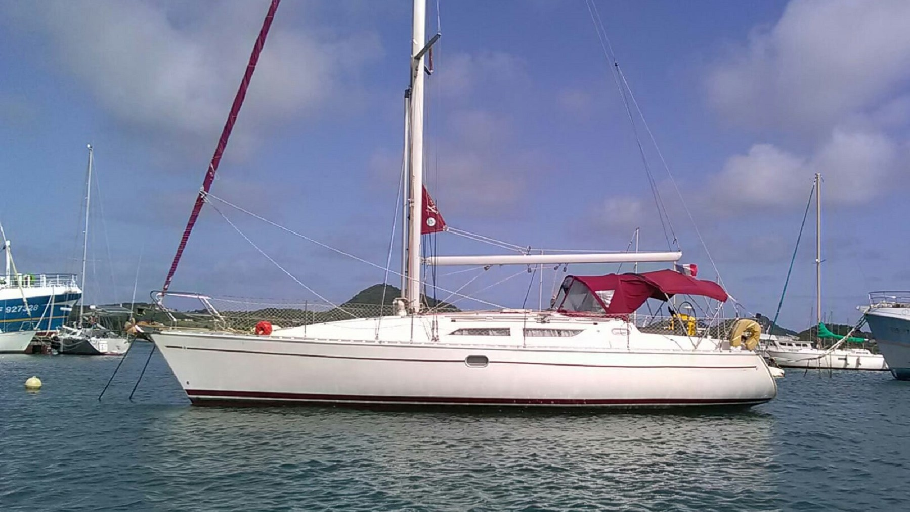

L'association Vagabond Voile vous propose des balades sur un voilier de 11 mètres le long de la côte Caraïbe en petit comité. Au départ de Deshaies, vous pourrez nous accompagner afin de recenser les cétacés, nager avec les tortues et les poissons multicolores et vous initier à la voile. Vous visiterez la réserve Cousteau, vous découvrirez des plages isolées et paradisiaques et vous admirerez les jolis paysages de la Basse-Terre au soleil couchant. Florent, passionné du monde marin, vous fera découvrir les joyaux de la côte sous le vent et saura vous accueillir avec le sourire. Vous pouvez consulter toutes les infos sur nos sorties sur notre page Facebook Vagabond Voile Guadeloupe.
